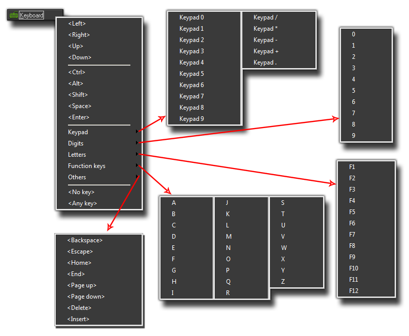

The Keyboard Events
The keyboard events are three of the many events that can be triggered in an instance and may contain code or actions.
 The Keyboard Events
The Keyboard Events
Obviously when creating a game, letting the player control the different aspects is very important. to that end GameMaker:Studio provides you with a very comprehensive list of keyboard sub events that can
be used in any of the three main keyboard events. As these are all the same for each of the three events they will all be covered together in this section of the manual.
Before looking at the sub events, let's look at the three keyboard events themselves :
 Keyboard Pressed Event : This event is only triggered once whenever the selected key is pressed down
Keyboard Pressed Event : This event is only triggered once whenever the selected key is pressed down
- Keyboard Event : This event is triggered continuously, every step, for as long as the selected key is pressed down
 Keyboard Released Event : This event is only triggered once whenever the selected key is released
Keyboard Released Event : This event is only triggered once whenever the selected key is released
As you can see, each of these events does a very different thing and knowing the distinction between them can help you solve many a problem or do things in your game in a much more efficient way. It should be noted that
keyboard events are actually triggered in all active instances in a room whenever a key is pressed, but only those that have an event defined for that particular key will respond and you can create multiple keyboard
events in any object and the instances of that object will respond to all of them while the game is running.
When you add any keyboard event to an object, you will be presented with the keyboard sub event menu where you can specify the key you are to be checking for :

Now, most of them are fairly obvious, but let's just go through the sections briefly - at the top we have the arrow keys, followed by the most used modifier keys, then the rest of the keyboard (split into sub sections as you can see)
and finally two very special sub events, No Key and Any Key. As their names imply, these are sub events that check for when no key is pressed or for when any key is pressed. Please note
that the keys on the numeric keypad only produce the corresponding events when <NumLock> is pressed.